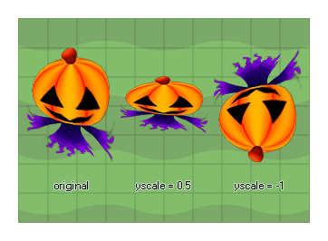

image_yscale
Returns : Real
This value sets the vertical scaling applied to the sprite that has been assigned to the current instance. A scale of 1 indicates no scaling (1:1), smaller values will scale down (0.5,
for example, will half the width of the sprite), larger values will scale up and negative values will mirror the sprite and scale it unless the value used is exactly -1 (in which case
the sprite is just mirrored about its origin with no scaling).

if image_yscale < 5
{
image_yscale += 0.2;
image_xscale = image_yscale;
}
else
{
instance_create(x,y,obj_Explosion);
instance_destroy();
}
The above code scales the sprite and then once it is scaled to 5 times it's original size, a new instance of another object is created and the instance destroyed.